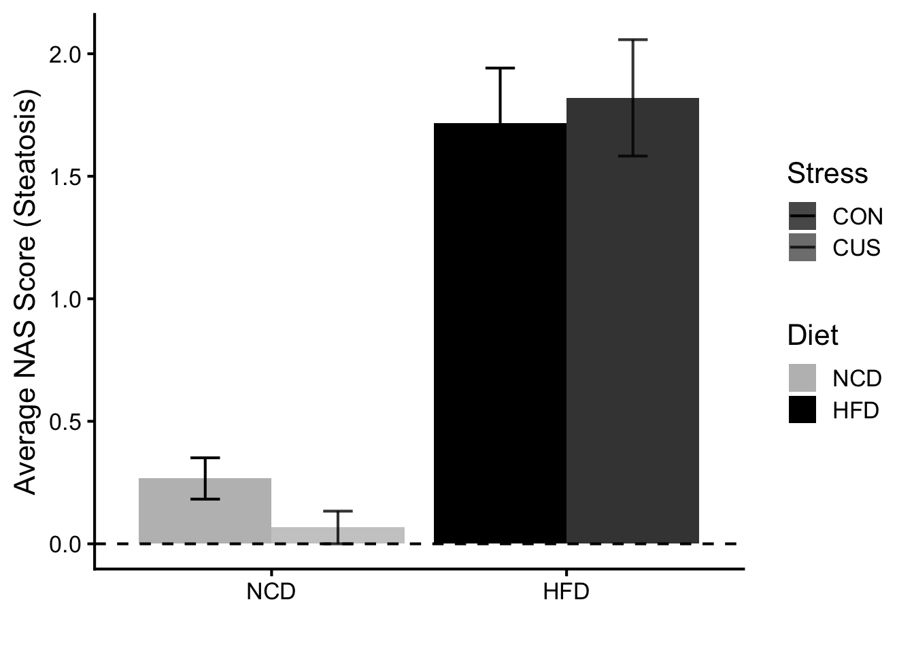
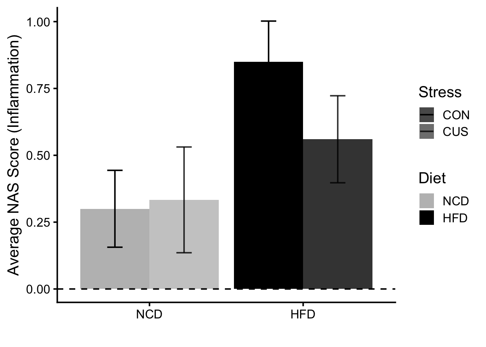
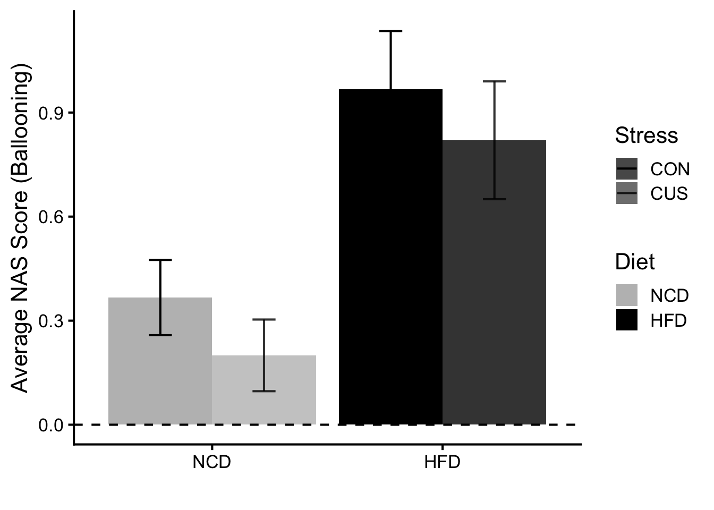
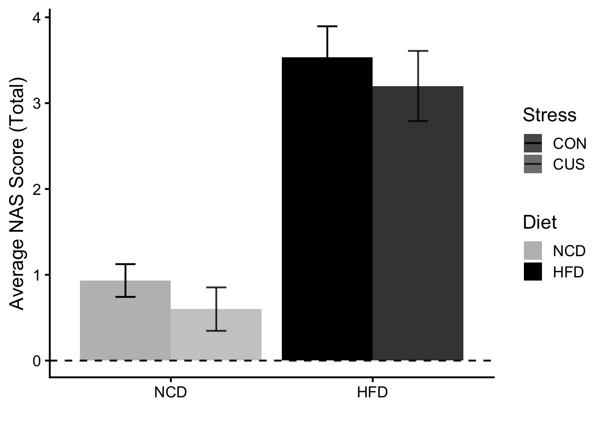
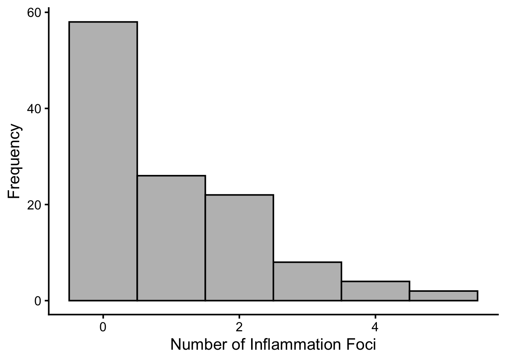
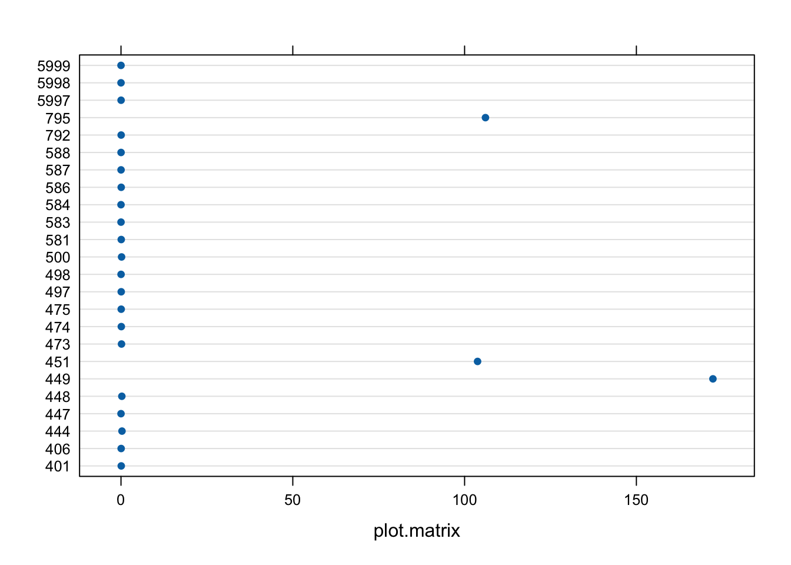
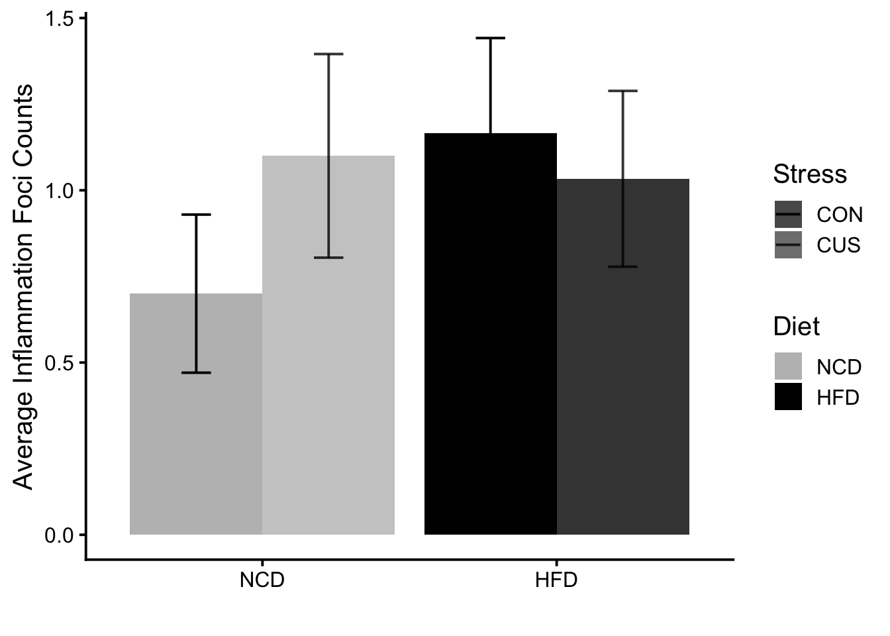

Show the code
# hide this code chunk
#| echo: false
#| message: false
# defines the se function
se <- function(x) {
sd(x, na.rm = TRUE) / sqrt(length(x))
}
#load these packages, nearly always needed
library(tidyverse)# hide this code chunk
#| echo: false
#| message: false
# defines the se function
se <- function(x) {
sd(x, na.rm = TRUE) / sqrt(length(x))
}
#load these packages, nearly always needed
library(tidyverse)The purpose of this experiment is to quantify the differences of physiological, metabolic, and psychological responses in lean and obese mice, under stressed and unstressed conditions.
[Link to the protocol used (permalink preferred) for the experiment and include any notes relevant to your analysis. This might include specifics not in the general protocol such as cell lines, treatment doses etc.]
High-fat diet (D12492) formula: https://researchdiets.com/formulas/d12492
[Describe your raw data files, including what the columns mean (and what units they are in).]
library(readxl) #loads the readr package
filename <- "raw data/Data Collection Sheet.xlsx" #input file(s)
#this loads whatever the file is into a dataframe called exp.data if it exists
property <- read_excel(filename, sheet = "Property") |>
mutate(Diet = factor(Diet, levels = c("NCD", "HFD")), #relevel diet so NCD is the reference
Stress = factor(Stress, levels = c("CON", "CUS"))) #relevel stress so CON is the reference
liver_histology <- "raw data/histo_db_liver NAS copy.xlsx"
liver <- read_excel(liver_histology, skip = 5) |>
rename(Code = `ID`, Steatosis_1 = `Steatosis`, Steatosis_2 = `...4`, Steatosis_3 = `...5`, Steatosis_4 = `...6`, Steatosis_5 = `...7`, Steatosis_average = `Average...8`, Inflammation_1 = `Lobular inflammation`, Inflammation_2 = `...10`, Inflammation_3 = `...11`, Inflammation_4 = `...12`, Inflammation_5 = `...13`, Inflammation_average = `Average...14`, Ballooning_1 = `Hepatocellular balooning`, Ballooning_2 = `...16`, Ballooning_3 = `...17`, Ballooning_4 = `...18`, Ballooning_5 = `...19`, Ballooning_average = `Average...20`) |>
left_join(property)
inflammation_foci <- "raw data/Inflammation foci count.xlsx"
foci_raw <- read_excel(inflammation_foci)
#load packages
library(lme4)
library(lmerTest)
library(knitr)
library(broom)
library(broom.mixed)
library(performance)
library(see)
library(ggpattern)
library(mediation)
library(influence.ME)
library(emmeans)
library(pbkrtest)
library(DHARMa)
library(drc)
library(fitdistrplus)
library(AER)
library(car)These data can be found in /Users/macbook/Documents/GitHub/CushingAcromegalyStudy/scripts/scripts-corticosterone in a file named no file found. This input file was most recently updated on unknown. This script was most recently updated on Sat Jun 13 23:26:52 2026.
[Describe the analysis as you intersperse code chunks]
#Steatosis
liver |>
group_by(Diet, Stress) |>
summarize(mean_stea = mean(`Steatosis_average`, na.rm = TRUE),
se_stea = sd(`Steatosis_average`, na.rm = TRUE)/sqrt(n()),
.groups = "drop") |>
ggplot(
aes(x = Diet,
y = mean_stea,
ymin = mean_stea - se_stea,
ymax = mean_stea + se_stea,
fill = Diet,
alpha = Stress)) +
geom_col(position = position_dodge(width = 0.9)) +
geom_errorbar(width = 0.2,
position = position_dodge(width = 0.9)) +
labs(y = "Average NAS Score (Steatosis)",
x = "") +
geom_hline(yintercept = 0,
lty = 2) +
scale_fill_manual(values = c("grey", "black")) +
scale_alpha_manual(values = c("CON" = 1, "CUS" = 0.8)) +
theme_classic(base_size = 16)
#Inflammation
liver |>
group_by(Diet, Stress) |>
summarize(mean_infl = mean(`Inflammation_average`, na.rm = TRUE),
se_infl = sd(`Inflammation_average`, na.rm = TRUE)/sqrt(n()),
.groups = "drop") |>
ggplot(
aes(x = Diet,
y = mean_infl,
ymin = mean_infl - se_infl,
ymax = mean_infl + se_infl,
fill = Diet,
alpha = Stress)) +
geom_col(position = position_dodge(width = 0.9)) +
geom_errorbar(width = 0.2,
position = position_dodge(width = 0.9)) +
labs(y = "Average NAS Score (Inflammation)",
x = "") +
geom_hline(yintercept = 0,
lty = 2) +
scale_fill_manual(values = c("grey", "black")) +
scale_alpha_manual(values = c("CON" = 1, "CUS" = 0.8)) +
theme_classic(base_size = 16)
#Ballooning
liver |>
group_by(Diet, Stress) |>
summarize(mean_ball = mean(`Ballooning_average`, na.rm = TRUE),
se_ball = sd(`Ballooning_average`, na.rm = TRUE)/sqrt(n()),
.groups = "drop") |>
ggplot(
aes(x = Diet,
y = mean_ball,
ymin = mean_ball - se_ball,
ymax = mean_ball + se_ball,
fill = Diet,
alpha = Stress)) +
geom_col(position = position_dodge(width = 0.9)) +
geom_errorbar(width = 0.2,
position = position_dodge(width = 0.9)) +
labs(y = "Average NAS Score (Ballooning)",
x = "") +
geom_hline(yintercept = 0,
lty = 2) +
scale_fill_manual(values = c("grey", "black")) +
scale_alpha_manual(values = c("CON" = 1, "CUS" = 0.8)) +
theme_classic(base_size = 16)
#Total score
liver |>
group_by(Diet, Stress) |>
summarize(mean_liver = mean(`Total score`, na.rm = TRUE),
se_liver = sd(`Total score`, na.rm = TRUE)/sqrt(n()),
.groups = "drop") |>
ggplot(
aes(x = Diet,
y = mean_liver,
ymin = mean_liver - se_liver,
ymax = mean_liver + se_liver,
fill = Diet,
alpha = Stress)) +
geom_col(position = position_dodge(width = 0.9)) +
geom_errorbar(width = 0.2,
position = position_dodge(width = 0.9)) +
labs(y = "Average NAS Score (Total)",
x = "") +
geom_hline(yintercept = 0,
lty = 2) +
scale_fill_manual(values = c("grey", "black")) +
scale_alpha_manual(values = c("CON" = 1, "CUS" = 0.8)) +
theme_classic(base_size = 16)
liver.lm.total <- lm(`Total score` ~ Diet * Stress + (1|Code), data = liver)
liver.lm.total |>
tidy(effects = 'fixed') |>
kable(caption = 'FINAL MODEL: Effect of Diet, Stress, and Diet:Stress Interaction on Total NAS Score (LM)')| term | estimate | std.error | statistic | p.value |
|---|---|---|---|---|
| (Intercept) | 0.9333333 | 0.4432205 | 2.1057989 | 0.0436979 |
| DietHFD | 2.6000000 | 0.5428321 | 4.7896948 | 0.0000422 |
| StressCUS | -0.3333333 | 0.6268085 | -0.5317945 | 0.5987847 |
| 1 | CodeTRUE | NA | NA | NA | NA |
| DietHFD:StressCUS | 0.0000000 | 0.7803703 | 0.0000000 | 1.0000000 |
liver.mlm.data <- liver |>
fill(Group, .direction = c("down")) |>
dplyr::select(-ends_with("average"), -`Total score`, -`Start Date`, -`End Date`, -`glucose`) |>
group_by(Group, Diet, Stress) |>
pivot_longer(`Steatosis_1`:`Ballooning_3`,
names_sep = "_",
names_to = c("Feature", "Image"),
values_to = "Score") |>
pivot_wider(names_from = Feature, values_from = Score)
liver.mlm.stea <- lmer(Steatosis ~ Diet * Stress + (1|Code), data = liver.mlm.data)
liver.mlm.stea |>
tidy(effects = 'fixed') |>
kable(caption = 'FINAL MODEL: Effect of Diet, Stress, and Diet:Stress Interaction on Steatosis Score')| effect | term | estimate | std.error | statistic | df | p.value |
|---|---|---|---|---|---|---|
| fixed | (Intercept) | 0.2666667 | 0.2592654 | 1.0285473 | 30 | 0.3119143 |
| fixed | DietHFD | 1.4500000 | 0.3175339 | 4.5664414 | 30 | 0.0000790 |
| fixed | StressCUS | -0.2000000 | 0.3666566 | -0.5454696 | 30 | 0.5894637 |
| fixed | DietHFD:StressCUS | 0.3033333 | 0.4564838 | 0.6644997 | 30 | 0.5114463 |
liver.mlm.infl <- lmer(Inflammation ~ Diet * Stress + (1|Code), data = liver.mlm.data)
liver.mlm.infl |>
tidy(effects = 'fixed') |>
kable(caption = 'FINAL MODEL: Effect of Diet, Stress, and Diet:Stress Interaction on Inflammation Score')| effect | term | estimate | std.error | statistic | df | p.value |
|---|---|---|---|---|---|---|
| fixed | (Intercept) | 0.3000000 | 0.2003793 | 1.4971609 | 30 | 0.1447997 |
| fixed | DietHFD | 0.5500000 | 0.2454135 | 2.2411157 | 30 | 0.0325719 |
| fixed | StressCUS | 0.0333333 | 0.2833791 | 0.1176281 | 30 | 0.9071464 |
| fixed | DietHFD:StressCUS | -0.3233333 | 0.3528041 | -0.9164670 | 30 | 0.3667309 |
liver.mlm.ball <- lmer(Ballooning ~ Diet * Stress + (1|Code), data = liver.mlm.data)
liver.mlm.ball |>
tidy(effects = 'fixed') |>
kable(caption = 'FINAL MODEL: Effect of Diet, Stress, and Diet:Stress Interaction on Ballooning Score')| effect | term | estimate | std.error | statistic | df | p.value |
|---|---|---|---|---|---|---|
| fixed | (Intercept) | 0.4444444 | 0.2036195 | 2.1827203 | 30 | 0.0370174 |
| fixed | DietHFD | 0.5555556 | 0.2493820 | 2.2277295 | 30 | 0.0335463 |
| fixed | StressCUS | -0.2222222 | 0.2879615 | -0.7717082 | 30 | 0.4463239 |
| fixed | DietHFD:StressCUS | 0.0555556 | 0.3585092 | 0.1549627 | 30 | 0.8778886 |
foci <- foci_raw |>
separate(`Image #`, into = c("Code", "Image #"), sep = "-", convert = TRUE) |>
left_join(property, by = "Code")
ggplot(foci, mapping = aes(x = `Inflammation Foci`)) +
geom_histogram(binwidth = 1, fill = "grey", color = "black") +
labs(x = "Number of Inflammation Foci",
y = "Frequency") +
theme_classic(base_size = 16)
foci_mlm <- lmer(`Inflammation Foci` ~ Diet * Stress + (1|Code), data = foci)
foci_mlm |>
tidy(effects = 'fixed') |>
kable(caption = 'Effect of Diet, Stress, and Diet:Stress Interaction on Inflammation Foci')| effect | term | estimate | std.error | statistic | df | p.value |
|---|---|---|---|---|---|---|
| fixed | (Intercept) | 0.7000000 | 0.2649948 | 2.641562 | 20 | 0.0156509 |
| fixed | DietHFD | 0.4666667 | 0.3747592 | 1.245244 | 20 | 0.2274349 |
| fixed | StressCUS | 0.4000000 | 0.3747592 | 1.067352 | 20 | 0.2985279 |
| fixed | DietHFD:StressCUS | -0.5333333 | 0.5299895 | -1.006309 | 20 | 0.3262874 |
foci_gmlm <- glmer(`Inflammation Foci` ~ Diet * Stress + (1 | Code), data = foci, family = poisson)
fit_pois <- fitdist(foci$`Inflammation Foci`, "pois")
fit_nb <- fitdist(foci$`Inflammation Foci`, "nbinom")
fit_normal <- fitdist(foci$`Inflammation Foci`, "norm")
gofstat(list(fit_pois, fit_nb, fit_normal),
fitnames = c("Poisson", "Negative Binomial", "Normal"))Chi-squared statistic: 13.783 3.450441 56.24665
Degree of freedom of the Chi-squared distribution: 2 1 1
Chi-squared p-value: 0.001016389 0.06323491 6.392681e-14
Chi-squared table:
obscounts theo Poisson theo Negative Binomial theo Normal
<= 0 58 44.145532 55.46754 24.85297
<= 1 26 44.145533 33.71997 35.14703
<= 2 22 22.072767 16.85968 35.14703
> 2 14 9.636168 13.95281 24.85297
Goodness-of-fit criteria
Poisson Negative Binomial Normal
Akaike's Information Criterion 345.7410 335.3457 393.2011
Bayesian Information Criterion 348.5285 340.9207 398.7760foci_gmlm |>
tidy(effects = 'fixed') |>
kable(caption = 'Effect of Diet, Stress, and Diet:Stress Interaction on Inflammation Foci (Poisson GLMM)')| effect | term | estimate | std.error | statistic | p.value |
|---|---|---|---|---|---|
| fixed | (Intercept) | -0.4565316 | 0.2913057 | -1.567191 | 0.1170701 |
| fixed | DietHFD | 0.5247267 | 0.3788325 | 1.385115 | 0.1660173 |
| fixed | StressCUS | 0.4567828 | 0.3813684 | 1.197747 | 0.2310156 |
| fixed | DietHFD:StressCUS | -0.5796112 | 0.5224382 | -1.109435 | 0.2672426 |
# count data; number of error = mean
infl.inf <- influence(foci_gmlm, group = "Code")
plot(infl.inf, which = "cook")
foci |>
group_by(Code, Diet, Stress) |>
summarize(mean_animal_foci = mean(`Inflammation Foci`, na.rm = TRUE)) |>
ungroup() |>
group_by(Diet, Stress) |>
summarize(mean_foci = mean(mean_animal_foci, na.rm = TRUE),
se_foci = sd(mean_animal_foci, na.rm = TRUE)/sqrt(n()),
.groups = "drop") |>
ggplot(
aes(x = Diet,
y = mean_foci,
ymin = mean_foci - se_foci,
ymax = mean_foci + se_foci,
fill = Diet,
alpha = Stress)) +
geom_col(position = position_dodge(width = 0.9)) +
geom_errorbar(width = 0.2,
position = position_dodge(width = 0.9)) +
labs(y = "Average Inflammation Foci Counts",
x = "") +
scale_fill_manual(values = c("grey", "black")) +
scale_alpha_manual(values = c("CON" = 1, "CUS" = 0.8)) +
theme_classic(base_size = 15)
foci_gmlm <- glmer(`Inflammation Foci` > 0 ~ Diet * Stress + (1 | Code), data = foci, family = binomial)
foci_gmlm |>
tidy(effects = 'fixed', exponentiate = TRUE) |>
kable(caption = 'Effect of Diet, Stress, and Diet:Stress Interaction on Presence of Inflammation Foci (Binomial GLMM)')| effect | term | estimate | std.error | statistic | p.value |
|---|---|---|---|---|---|
| fixed | (Intercept) | 0.5386759 | 0.2882636 | -1.156050 | 0.2476608 |
| fixed | DietHFD | 2.9872900 | 2.2760234 | 1.436361 | 0.1508998 |
| fixed | StressCUS | 2.5629798 | 1.9440977 | 1.240782 | 0.2146863 |
| fixed | DietHFD:StressCUS | 0.2804028 | 0.3009633 | -1.184663 | 0.2361507 |
sessionInfo()R version 4.6.0 (2026-04-24)
Platform: aarch64-apple-darwin23
Running under: macOS Tahoe 26.5.1
Matrix products: default
BLAS: /Library/Frameworks/R.framework/Versions/4.6/Resources/lib/libRblas.0.dylib
LAPACK: /Library/Frameworks/R.framework/Versions/4.6/Resources/lib/libRlapack.dylib; LAPACK version 3.12.1
locale:
[1] en_US.UTF-8/en_US.UTF-8/en_US.UTF-8/C/en_US.UTF-8/en_US.UTF-8
time zone: America/Detroit
tzcode source: internal
attached base packages:
[1] stats graphics grDevices utils datasets methods base
other attached packages:
[1] AER_1.2-16 lmtest_0.9-40 zoo_1.8-15
[4] car_3.1-5 carData_3.0-6 fitdistrplus_1.2-6
[7] survival_3.8-6 drc_3.0-1 DHARMa_0.5.0
[10] pbkrtest_0.5.5 emmeans_2.0.3 influence.ME_0.9-10
[13] mediation_4.5.1 sandwich_3.1-1 mvtnorm_1.4-1
[16] MASS_7.3-65 ggpattern_1.3.1 see_0.13.0
[19] performance_0.16.0 broom.mixed_0.2.9.7 broom_1.0.13
[22] knitr_1.51 lmerTest_3.2-1 lme4_2.0-1
[25] Matrix_1.7-5 readxl_1.5.0 lubridate_1.9.5
[28] forcats_1.0.1 stringr_1.6.0 dplyr_1.2.1
[31] purrr_1.2.2 readr_2.2.0 tidyr_1.3.2
[34] tibble_3.3.1 ggplot2_4.0.3 tidyverse_2.0.0
loaded via a namespace (and not attached):
[1] Rdpack_2.6.6 gridExtra_2.3 rlang_1.2.0
[4] magrittr_2.0.5 multcomp_1.4-30 furrr_0.4.0
[7] otel_0.2.0 compiler_4.6.0 vctrs_0.7.3
[10] pkgconfig_2.0.3 fastmap_1.2.0 backports_1.5.1
[13] labeling_0.4.3 rmarkdown_2.31 tzdb_0.5.0
[16] nloptr_2.2.1 xfun_0.57 jsonlite_2.0.0
[19] parallel_4.6.0 cluster_2.1.8.2 R6_2.6.1
[22] stringi_1.8.7 RColorBrewer_1.1-3 parallelly_1.47.0
[25] boot_1.3-32 rpart_4.1.27 cellranger_1.1.0
[28] numDeriv_2016.8-1.1 estimability_1.5.1 Rcpp_1.1.1-1.1
[31] base64enc_0.1-6 splines_4.6.0 nnet_7.3-20
[34] timechange_0.4.0 tidyselect_1.2.1 abind_1.4-8
[37] rstudioapi_0.19.0 yaml_2.3.12 codetools_0.2-20
[40] listenv_0.10.1 lattice_0.22-9 withr_3.0.2
[43] S7_0.2.2 coda_0.19-4.1 evaluate_1.0.5
[46] foreign_0.8-91 future_1.70.0 lpSolve_5.6.23
[49] pillar_1.11.1 checkmate_2.3.4 reformulas_0.4.4
[52] insight_1.5.0 generics_0.1.4 hms_1.1.4
[55] scales_1.4.0 minqa_1.2.8 gtools_3.9.5
[58] globals_0.19.1 xtable_1.8-8 glue_1.8.1
[61] Hmisc_5.2-5 tools_4.6.0 data.table_1.18.4
[64] grid_4.6.0 plotrix_3.8-14 rbibutils_2.4.1
[67] colorspace_2.1-2 nlme_3.1-169 htmlTable_2.5.0
[70] Formula_1.2-5 cli_3.6.6 gtable_0.3.6
[73] digest_0.6.39 TH.data_1.1-5 htmlwidgets_1.6.4
[76] farver_2.1.2 htmltools_0.5.9 lifecycle_1.0.5